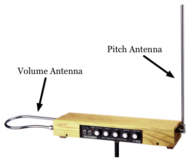
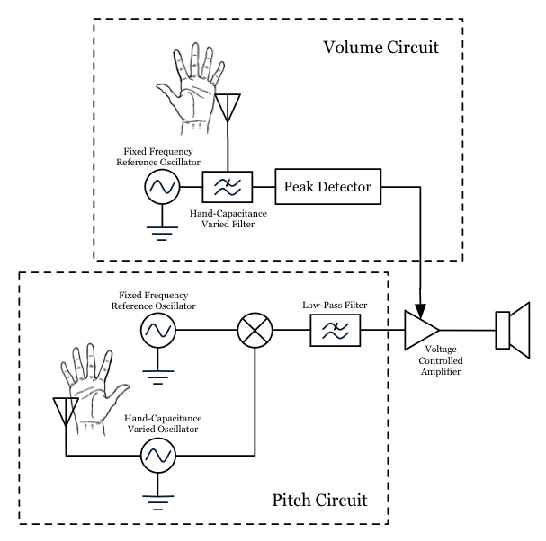
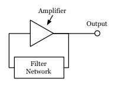
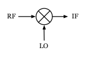

understanding the theremin
introduction and brief history
The theremin is a musical instrument that was invented by a russian physicist named Leon Theremin in 1920. The technology used was originally intended for proximity detection, and he converted it into a musical instrument. The most interesting feature of this instrument is that one does not have to touch it in order to play it. It gained momentum when Vladimir Lenin saw it and was impressed; this is probably why it has the notoriety it does today (at least among musicians). The history surrounding the instrument and its inventor is fascinating (including KGB operatives dragging Theremin from the US to Siberia to work in a work camp for scientists and engineers, according to some reports); one can read more about it in the Wikipedia article. Also, there is a documentary called Theremin: An Electronic Odyssey which has recieved much critical acclaim and features some of the pioneers of the instrument including Theremin himself, Clara Rockmore, one of the early virtuosic players, Robert Moog, a pioneer of electronic music and designer of the most popular model, among others such as Todd Rundgren.
Below is a video of the inventor himself performing on the instrument to accompaniment by piano:
Below is a video of master thereminist Lydia Kavina playing "Claire de Lune":
functional description
There are two antennas that protrude out of the device (as can be seen in the picture below) with which one controls the volume and the pitch of the instrument. The antenna on the left is for volume and the antenna on the right is for pitch. To adjust the pitch, one moves one's hand closer to the pitch antenna to increase the pitch, and further from the antenna to decrease the pitch. The instrument is set to be silent by touching the volume antenna, and it gradually gets louder as one moves one's hand away from it. One can continuously vary the pitch of the instrument (like the voice or a violin).
how it works
Before understanding the description presented here, you will need to have a qualitative understanding what voltage and current are, what resistors, capacitors and inductors are and how they perform at high and low frequencies, what a sine wave is and have a basic concept of what frequency is and means (i.e. that it can be low, high, or in the middle). In the appendix, I explain most of what one should need to know in order to understand how all of this fits together.
proximity sensing mechanism
Since it is most interesting aspect of the instrument, we will start by discussing how the theremin determines the position of your hand. Put briefly, moving your hand close to one of the antennas increases the capacitance that antenna to an RF ground (which, in this case, is your body), which in turn adjusts the frequency of a resonant circuit such as an oscillator or a filter (more on this later). First, the antennas are not truly antennas (we are not sending nor recieving anything with them) but rather one plate of a capacitor (with the other plate being your hand). Note that this capacitance is relatively small.
Now, we will look at a block diagram of the circuit and understanding of how everything fits together.
pitch circuit
First, let's analyze the pitch circuit. The first thing to note is that the two oscillators shown in the diagram are (typically) operating at about 500 kHz, or just below AM radio. We can't directly create audio frequencies because the hand-capacitance is relatively small and won't shift the oscillator's output frequency enough for it to operate as a musical instrument. So we operate two oscilators at a higher frequency (where the hand capacitance can provide us with the pitch range we desire) offset by frequencies in the audio frequency range (Audible frequencies are from 20 Hz to 20 kHz, but we will only output a subset of this roughly corresponding to that of the voice; i.e. 300 Hz to 3 kHz). The tuned one gets tuned from the reference frequency plus the lowest audio frequency we wish to output to the reference frequency plus the highest frequency we wish to output. Now, we mix them together, getting a mixture of our desired audio signal and another high frequency signal. Then we low-pass filter the signal to remove the high frequency mixer product. Now we have our audio signal; all we have to do is shape it's level with the volume circuit.
volume circuit
Now, the volume circuit operates on similar principles to the pitch circuit, that is, we have a resonant circuit being tuned by the hand-capacitance of an antenna to change its performance. In this case, instead of changing the frequency of an oscillator, we will tune the turning frequency (the frequency right between the pass and stop bands) of a filter. The oscillator is tuned to near the turning frequency of the filter, but not attenuated too much by it. By adding the hand-capacitance into the filter network, we move the turning frequency so that the oscillator's signal is attenuated. Then, we use a peak detector circuit to turn the strength of the oscillating signal into a constant voltage. This constant voltage controls an amplifier, which sets the volume of our sound signal generated in the pitch circuit.
appendix: basic electronics
If you don't know things like Ohm's law (V=IR), what voltage or current is, or what a resistor is, or any of this, then before you read this page, I suggest you read Getting Started in Electronics by Forest Mims III. It is very inexpensive ($20). It was my first book on electronics. It is very clearly written and illustrated. There is next to no math required. An understanding of the concepts from there should be all one needs to understand the concepts here.
frequency
Frequency is a number of importance when we are talking about signals which are repetetive in time, like sine waves, sawtooth waves, and any other signal which has the same basic signal shape repeated over and over again. We say that a signal has a high frequency when it cycles through its basic signal shape very rapidly, and we say it has a low frequency when it cycles through that basic signal shape very slowly. Frequency also determines pitch in music; the notes on the right side of a piano keyboard or those that a soprano sings or the sounds a guitar makes when fretting at the top of the neck (i.e. near the body) are all high in pitch and frequency; the sounds that a bass or baritone sing and the notes on the left of the piano keyboard etc. are all low in frequency.
In the image above, the top signal has the lowest frequency and the bottom signal has the highest frequency. Note that as we move left to right, we are looking at time passing and as the signal moves up and down, the amplitude (or level, or strength) is increasing or decreasing. In the context of electronics, the amplitude would be a voltage or current, however, almost all of the time we deal with voltage signals. Also note, that many times when we talk about the amplitude or strength of a signal, we are talking about the level from the highest value to the lowest value, or the peak to peak value (or something similar, known as RMS level) rather than the level at any instant.
capacitors and inductors
Now, we will discuss capacitors' performance at low and high frequencies. At low frequencies, or at DC, capacitors act like an open circuit (i.e. they disconnect the circuit path that they are in), preventing any current from flowing. At high frequencies, they act like a short circuit (i.e. they connect the circuit path that they are in), allowing current to flow. In between, they do a fraction of one and the rest of the other, but that is the subject for a more computational approach. The figure below sumarizes this discussion into schematic diagrams.
Inductors are just the opposite; they appear as a short circuit to steady state (i.e. DC or relatively low frequency signals) and as an open circuit to high frequency signals. The diagram above is provided as a summary.
basic filters
A filter is a device which blocks signals at certain frequencies and allows signals at other frequencies to pass through. We will investigate basic low-pass and high-pass filters so that you can get the basic idea of how filters work.
low-pass filter
A low-pass filter's schematic and its frequency response are shown below.
At low frequencies, this filter lets signals go through, and at high freqencies it does not. To verify this for yourslf, try to replace the capacitor with its high frequency model and then its low frequency model presented earlier. You will see that at high frequencies, if shorts the signal to ground, effectively setting its amplitude to zero, while at low frequencies it does not, effectively leaving the signal level as it was. Now, looking at the frequency response curve, briefly, we see that the horizontal axis is logarithmic frequency and the vertical axis is the gain. Don't let the word 'logarithmic' scare you, it just means that moving over one notch on the frequency axis means we increase the frequency by a factor of ten. This is just a way of compressing the data. The vertical axis is in decibels, which also might be a little intimidating, but all that you need to know is that at 0 dB, we are neither adding to nor subtracting from the signal, and anything below that means we are attenuating or partially blocking the signal. Note that an understanding of decibles is not nessecary for our discussion.
For those interested, a basic rule of thumb for converting decibels to linear is as follows. 3 dB of attenuation (that is, at 3 dB below 0 dB, or at -3 dB of gain) means our output signal is one half the value of the input signal; 6 dB of attenuation means our output signal is one quarter the input signal's value, and 9 db of attenuation means our output signal is one eight the value of our original input signal.
high-pass filter
A high-pass filter's schematic and its frequency response are shown below.
Again, by replacing the capacitor with its low and high frequency equivalents, you can get a feel for how the circuit works. It stops low frequencies from going through and allows high frequencies to pass.
You can make a band-pass filter or a band-stop filter by combining a low-pass and a high-pass filter in series. I won't get too much into the details of how it works; when putting filters together in series you multiply the attenuation of the two filters at any frequency to find out the attenuation of the new series filter at that frequency.
oscillators
Oscillators are a little bit of a tricky subject, but we will still cover the basics so that you can understand how the theremin works. Oscillators are devices that produce signals such as sine waves. Basically, an oscillator is an amplifier (a device that increases the amplitude of a signal) and a filter connected from its output to its input, as shown in the figure below. There are some additional considerations we need to take into account when designing oscillators, like the phase of the various signals, among other things, but this model will serve as a useful enough reference for the sake of the discussion.
Loosely, if you have a band-pass filter for your filter feedback network (and you worry about a couple of other things, like phase), you can have an oscillator. The filter feedback network is composed of resistors, inductors, and capacitors. The main idea associated with the theremin is to adjust these capacitances in order to control the frequency of the oscillator (Read the theremin part of the text for more on that...).
mixers
We will go really lightly on mixers. They are used all over radio systems. Below is a mixer schematic symbol.
All we need to know about a mixer is that the signal at IF is basically the combination of two signals, one with frequency f(RF) + f(LO) and one with frequency f(RF) - f(LO).
where to go from here
To learn more about actually building a theremin, I suggest this Electronic Musician article by Robert Moog. You can buy a kit from Moog Music that will probably be largely similar.
Thanks to Omegatron for the Butterworth Response image.
{kind=link}